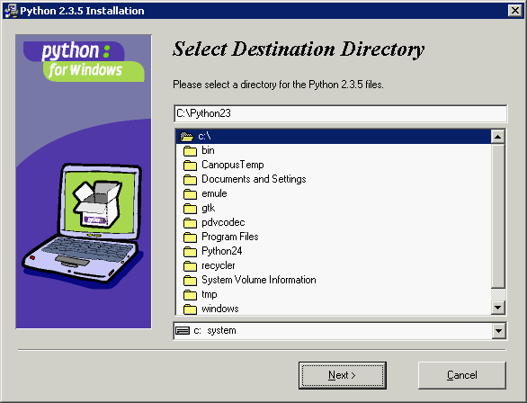
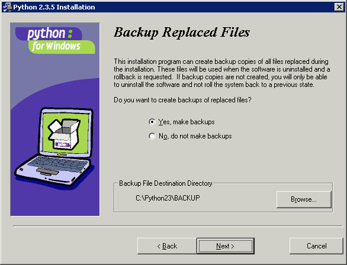
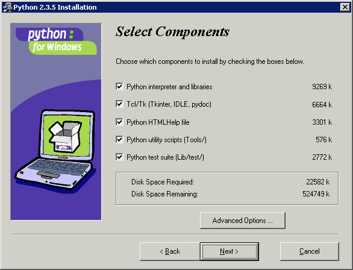
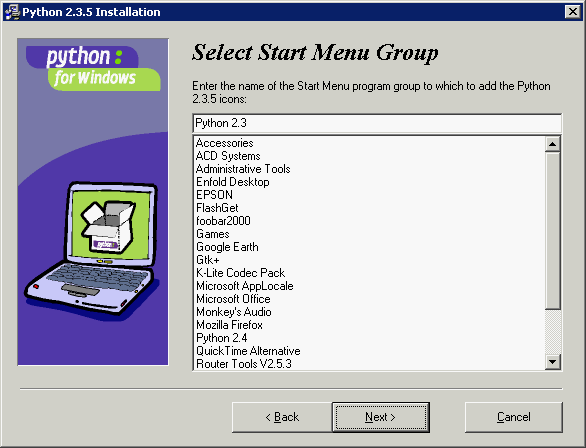
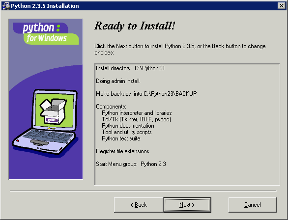
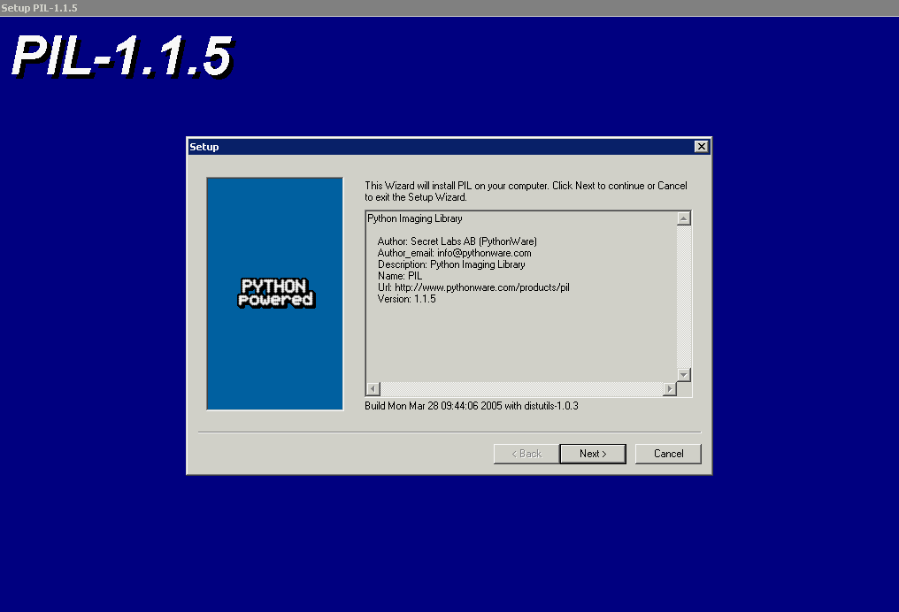
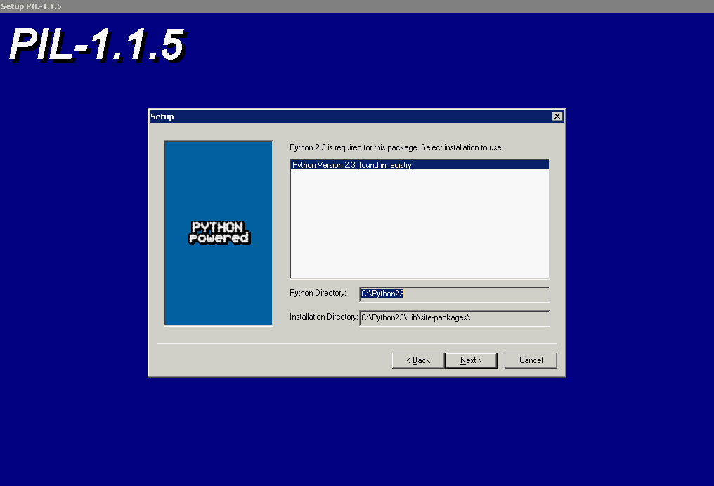
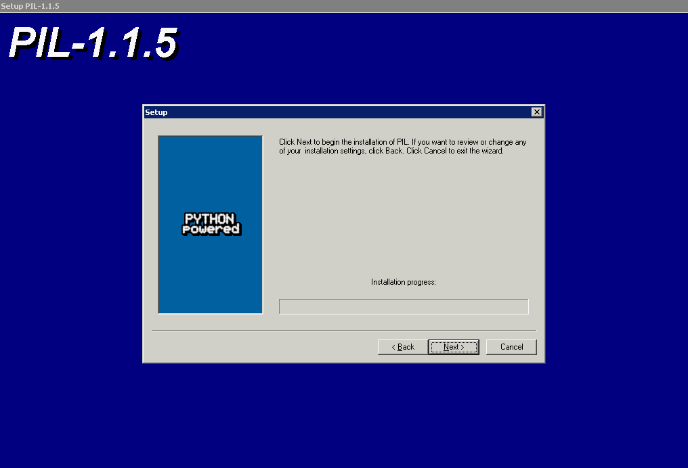
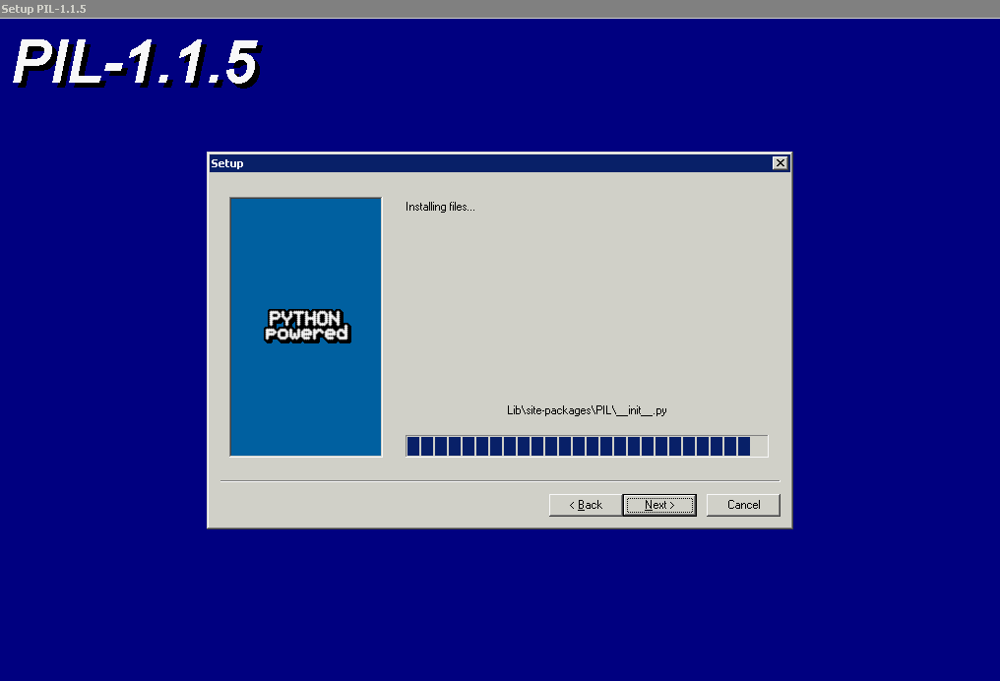

| author: | Yung-Yu Chen (yungyuc) http://blog.seety.org/everydaywork/ <yyc@seety.org> |
|---|---|
| copyright: | © 2005, all rights reserved |
各位好，今天我們要來介紹 Python 這一套功能強大、直譯式並且物件導向的程式語言。你或許聽過，或許沒聽過，但現在有機會來認識它了。
功能強大的直譯式程式語言不只有 Python，為什麼我們單單要來介紹它呢？Python 有幾項特點：
容易撰寫。
Python 具有許多物件導向的特性，然而並不要求一定得用物件導向的方式撰寫。撇開物件導向的議題不談，Python 通常可以靠比較短的程式碼完成比較多的功能，或者可以寫得比較清楚。
功能強大。
Python 自 1990 年由 Guido van Rossum 在荷蘭的 CWI 開始發展以來，從 0.9 進步到今天的 2.4.2，不但累積了相當完整的標準程式庫 (模組)，更有無以計數的非標準模組，而且絕大部分都是開放原始碼的。單以內建的模組來講，從簡單的數學運算、字串處理、網際網路協定連線、網際網路資料處理、各種壓縮格式，以及 POSIX 與主要作業系統的支援功能等等，含括的範圍非常地廣泛。
跨平台。
各種主要的作業系統都支援 Python。Python 程式常常不需要修改，便可以同時在 Linux 與 Windows 平台上執行，即使撰寫 GUI 程式 (透過 PyGTK, wxPython 等 binding) 也是一樣。所撰寫的 Python 程式透過標準的 distutils (模組) 進行包裝後，用標準的方式即可安裝於各種平台；在 Windows 下更可以自動產生方便的可執行 installer。
容易擴充。
Python 算是執行效率不錯的直譯式語言，但畢竟比不上 C 和 Fortran。然而只要我們想，大可以 C/C++ 或 Fortran 撰寫高效率的模組；這些模組的使用方式，與內建模組以及用 Python 撰寫的模組完全一樣。最好的是，撰寫的方法並不困難。
如果你使用 Linux，特別是 Debian GNU/Linux 的話，這個環境對 Python 是非常和善的，只要用 apt-get install python 即可安裝 Python 直譯器。若在安裝 Debian 的時候有選擇 task，那麼 Debian installer 可能已經幫你把 Python 裝好了。無論如何，安裝不費吹灰之力。
Debian 把 Python 直譯器拆成好幾個套件：python, python-doc, python-profiler 與 python-dev。非開發人員的系統上通常只會安裝 python 套件，它包含了直譯器程式與相關二進位程式庫；如果我們想寫 Python 程式的話 (這是你在看這篇文章的目的之一，不是嗎？)，python-doc 與 python-profiler 也應該要安裝起來。python-dev 包含的則是用來以其它語言開發延伸模組用的部分。
雖然目前最新版的 Python 已是 2.4.2 了，但 Debian 預設的 Python 版本仍是 2.3.5。Python 2.4 作了許多增強，但 Python 2.3 的套件 (協力套件) 支援性還是比較廣泛的。如果你想使用 2.4 版的 Python (或是倒回去 2.2, 2.1 版)，請 apt-get install python2.4 (可以把 2.4 改成 2.2, 2.1，以安裝相對的版本)。這些不同版本的 Python 能夠共存在 Debian 裡，有需要時可以手動叫用。在其它的 Linux distribution 上，使用預裝的 Python 即可。
如果你希望自己手動編譯 Python，請到下載頁2下載 source code distribution。熟練的程式員可能喜歡這樣作，然而當你有品質良好的 Debian 套件可以用的時候，需要自行編譯的機會就不是那麼多了。
Python 在 2.4 以後的版本加入了許多好用的語言功能與模組，在執行效率上也有所增進。如果你對新的 Generator Expressions3、Decorators4 與其它新增的功能5有興趣，非常推薦使用 Python 2.4。
這是一本 Linux 專門雜誌，不過既然要談跨平台能力高強的 Python，實在不能不提一下 Windows 下的 Python 安裝。Windows 當然是沒有內建 Python 的，但 Windows 版 Python 的安裝和普通的應用程式一模一樣，你只要從 Python 的下載頁2把安裝程式抓下來，然後執行，所有選項都使用預設值即可完成。實在非常地簡單。
為了仔細地說明，我們拿 Python 2.3.5 安裝程式來當作範例，請至 http://www.python.org/2.3.5/ 下載 Windows 版的安裝程式 (Python-2.3.5.exe)。執行了安裝程式之後，我們會看到這個畫面：
Python 並不大；安裝完畢以後也只佔用了 20MB 多一點的磁碟空間，所以最好裝在安裝程式所建議的這個位置。未來我們若自行安裝了任何外加的 Python 模組或套件，也會放在這個目錄裡面；不過 Python 套件通常都很小，我們還是不必擔心空間問題。接著按 Next (下一步)，選擇是否要備份可能會被覆蓋的檔案：
如果你是第一次安裝 Python，當然選不選備份都沒有差別；應該不會有被覆蓋的檔案。按 Next 選要安裝的組件：
完全安裝也只需要 20MB 的空間，我們沒必要就不取消任何一個項目。最後一個可以選擇的是程式集裡出現的名稱，這就隨你喜好了：
只用了四個畫面就設定完畢，這比安裝遊戲還簡單。最後一個畫面只是請求確認安裝，按下 Next 就開始安裝了：
如果你將來後悔了，到程式集裡的 Python 2.3 (看你有沒有改過) 就可以找到反安裝程式。
我們順便也展示一下在 Windows 下安裝 Python 模組有多簡單。Python 下有一個非常方便的影像處理程式庫：Python Imaging Library (PIL)6，我們用它來示範。因為剛剛示範的是 Python 2.3，所以這裡也用 Python 2.3 版的包裝檔。請下載 PIL-1.1.5.win32-py2.3.exe 檔，點擊後開始安裝：
一開始是歡迎畫面，按下 Next 後繼續流程，會請求你指定要安裝的 Python 位置：
我們可以在一台電腦裡安裝好幾個不同的 Python；如果你有這麼作，此處便提供一個指定 Python installation 的機會。接下去確認安裝動作：
按下 Next 以後就開始安裝：
很快就會裝完，最後按 Finish 即結束安裝動作。
受限於篇幅，本文不可能學一般書籍的作法來列出 Python 所有的語法元素；我們要用幾個簡單的範例程式，從 Python 最有特色的地方進行介紹。由於這麼作無法精確完整地描述 Python 的寫法，所以推薦你繼續 (依序) 閱讀葉平 (PingYeh) 教授的 Python 教材7 (中文)、Python Online Tutorial8，以及比較硬的 Python Language Reference9；另外，Dive into Python10 也是一本可以在網路上免費下載的好書，值得參考。
讓我們來寫 Python 程式吧！Python 程式通常會存成 .py 檔，在 Windows 下的 Python 安裝程式會自動把這種副檔名和 Python 直譯器程式關聯起來，所以在指令行介面 (cmd.exe) 下輸入 "blahblah.py" 這樣的字眼，就會執行這個程式。而在 Linux 或其它 Unix-like 的系統裡面，就要再打開該檔案的執行權限 (通常以 chmod a+x blahblah.py 進行)。不管你使用哪種系統，我們還是先來 hello.py 一下：
#!/usr/bin/env python print "Hello, world"
執行的結果是 (Linux 環境)：
$ ./hello.py Hello, world
要讓 Python 程式在 Windows 下執行的關鍵是副檔名 .py，而要在 Linux 下執行的關鍵除了執行權限要設定之外，還有一個就是 hello.py 第一行的「標頭」。在 Linux 下所有像 Python 這類的指令稿，在檔案的最前頭都必須要指定所使用的直譯器；在這裡寫為 "#!/usr/bin/env python"，表示使用系統路徑裡第一個找到的 python 直譯器 (你的系統裡可能裝了不止一個 Python 喔)，也就是預設的直譯器。如果沒有這個「標頭」，Linux 就不知道它是個 Python 程式了。
註記
另一方面，在 Linux 下並不一定要把 Python 程式的副檔名取為 .py；事實上許多以 Python 指令稿撰寫的軟體都沒有副檔名，乍看之下和一般的程式沒什麼兩樣。舉個例子，你可以安裝一下 meld 這個 GUI 的 diff 工具，跑起來順得很；如果沒有特別提起，許多人也不會想到它完全是用 Python 寫的吧。
再來一個讀取檔案的例子 fileproc.py：
#!/usr/bin/env python
f = open( "/var/log/messages" )
lines = f.readlines()
f.close()
for line in lines:
print line
從第 2 行開始，程式會先打開 /var/log/messages 這個檔案 (Linux 的標準紀錄檔之一)，然後用檔案物件 (open 函式會傳回檔案物件，我們取名為 f) 的 readlines() 方法一次讀取所有的文字行，然後在第 4 行關閉檔案。接著是重要的迴圈敘述；lines 是用來存放所有文字行的列表，for line in lines 這個敘述的意思是「一次取 lines 列表中的一個項目，取名為 line」。在 for 迴圈敘述後加上冒號，換行然後「縮排」，同一段縮排的程式表示是一個區塊；我們這個 for 迴圈的區塊裡只包含了一行敘述，就是把 line 印到螢幕上。
/var/log/messages 檔裡的資料應該很多，你會看到一大堆字串跑過螢幕。這就表示程式執行成功了。在 Windows 下，請更換一下 open() 函式所打開的檔案，只要是純文字檔即可。
註記
Windows 和 Linux 用來分隔目錄的字元是不同的。在 Windows 下要用反斜線 (\) 而非斜線 (/) 來分隔目錄，不過因為 \ 符號在 Python 裡表示脫逸字元，所以在雙引號裡，你要用連續兩個的 \\ 才能表示一個反斜線。否則 Python 可能會和你抱怨找不到檔案。
Python 裡的字串可以用單引號 (') 或用雙引號 (") 包圍的文字來表示，效果一樣。我們接下來要說明 Python 字串處理能力，順便展示 Python 的互動式環境。在 Windows 下打開指令行介面 (cmd.exe)，輸入 C:\Python23\python；在 Linux 下的終端機內直接輸入 python，都可以進入互動式環境：
$ python Python 2.3.5 (#2, Aug 30 2005, 15:50:26) [GCC 4.0.2 20050821 (prerelease) (Debian 4.0.1-6)] on linux2 Type "help", "copyright", "credits" or "license" for more information. >>>
在 Linux 下要跳出時是按 Ctrl-D，而在 Windows 下則是按 Ctrl-Z。通常 Python 互動式環境的提示符號是如上的 >>>。讓我們試著輸入以下指令：
>>> print "a b c".split() ['a', 'b', 'c']
字串在 Python 裡也是一種物件，所以我們可以如上呼叫字串方法 split()。在不加參數的情況下，split() 方法會用字串裡的廣義空白 (包含空白、跳格與斷行等字元；連續的廣義空白字元視為單一的廣義空白) 來把字串斷成多個字串，並傳回包含這些字串的列表。我們可以指定列表元素的索引值來單獨存取這些字串：
>>> print 'this is an apple'.split()[2] an
這樣就取出了編號 2 的第三個單字 "an"。我們可以把這個技巧應用在之前讀取檔案的程式裡；只要知道檔案的格式，就能篩選出我們想要的字串資料。
如果我們想把字串寫進檔案，首先要用寫入模式來開啟新檔：
f = open( "newfilename.txt", 'w' )
再用檔案物件的 write() 方法來寫入字串：
f.write( "string data" )
最後不要忘了 close()。
Python 模組 (module) 是一種非常方便的設計；適當地利用模組可以在不汙染命名空間的情況下獲得最多的額外功能。模組的匯入是利用 import 敘述：
import sys
它匯入了最常用的 sys 內建模組。如果我們想處理指令行引數，就要靠 sys 模組裡的變數 argv：
#!/usr/bin/env python import sys print sys.argv
把這個程式存為 echoargs.py，然後執行：
$ ./echoargs.py arg1 arg2 ['./echoargs.py', 'arg1', 'arg2']
它把所有的指令行引數都印了出來，以列表的形式。sys.argv 這個變數實際上是個列表，它與 C 程式 main() 進入點函式的 argv 參數有異曲同工之妙，連名字都取作一樣；只是更為好用，因為 Python 的列表比 C 陣列自動化得太多，我們不必擔心列表項目的個數問題，Python 會幫我們處理好的。
Python 還有許多其它的模組，基本上都是以相同的方式匯入並使用的，請參閱線上手冊。
Python 程式語言的一個最大的特色就是以縮排定義程式結構。不像 C, C++, Java 等語言用括號定義程式區塊 (類別、函式、條件判斷和迴圈等)，在 Python 裡，行首的「空白字元個數」 (即縮排) 就定義了區塊結構。許多會寫像
int main(){
int i;
double d;
d = 1.d0;
i = 2;
}
這種程式的人一開始會非常不習慣這種作法；但所有程式設計的書都會告訴你程式碼應該要排整齊，亂排只會增加往後維護的困難度而已。Python 強迫程式員把程式寫得漂亮，這不單簡化了往後的維護工作，更去掉了程式裡那些擾人的括號，對減少程式碼長度來說效果良好。
註記
適當地縮短程式碼的行數絕對是好事。一個函式能在一頁裡列完，就能比兩三頁長的函式更易讀易懂，也更不容易寫錯。
在 Python 裡，
print "Hi"
print "hi"
是不合法的，要寫成
print "Hi" print "hi"
才可以。相對地，
if 1 == 1: print "1 == 1, of course"
是錯誤的寫法，要寫成像
if 1 == 1:
print "1 == 1, of course"
這樣才對。
至於一次縮排要縮多少個字元，Python 並沒有進行限制，甚至不同的段落空白不一樣長也可以；只要同一個區塊的行首空白數相同即可。然而經驗告訴我們，第一，「絕對不要用跳格鍵」，如果你用 VIM 寫程式，可以用 :set et 打開跳格鍵的空白取代功能 (好一點的編輯器一定都有這種功能，你的編輯器沒有的話，可能該考慮換一個了)；第二，縮排字元數要固定。Python 的爸爸 Guido van Rossum 喜歡用 4 個字元進行縮排，許多人都覺得這樣很好。
本文對 Python 作了粗淺的介紹，其實還非常地殘缺不全。你可能仍然不太了解 Python，所以最後我們要用一點篇幅來看看目前 Python 這個語言究竟有用在哪些地方？看過以後，你或許會比較有繼續研究下去的動力。
以上列出的是 Python 被大量應用的領域；沒有提到的地方代表了筆者的見聞不足，尚請讀者指正。
在下一期的內容裡，我們要來討論一些以 Python 管理 Linux 作業系統的技巧；一方面看看如何實際應用 Python，再方面進一步地深入 Python 的程式設計。
| [1] | Python: http://www.python.org/ |
| [2] | (1, 2) Python 下載頁: http://www.python.org/download/ |
| [3] | PEP 289 Generator Expressions in Python 2.4: http://docs.python.org/whatsnew/node4.html |
| [4] | PEP 318 Decorators for Functions and Methods in Python 2.4: http://docs.python.org/whatsnew/node6.html |
| [5] | Python 2.4 新增項目: http://docs.python.org/whatsnew/whatsnew24.html |
| [6] | PIL: http://www.pythonware.com/products/pil/ |
| [7] | 葉平的 Python 教材: http://www.ossacc.org/Download/TM/OssaccTM/Python/ |
| [8] | Python Tutorial: http://docs.python.org/tut/tut.html |
| [9] | Python Language Reference: http://docs.python.org/ref/ref.html |
| [10] | Dive into Python: http://diveintopython.org/ |
| [11] | SciPy 的效能比較: http://www.scipy.org/documentation/weave/weaveperformance.html |
| [12] | Python web programming: http://wiki.python.org/moin/WebProgramming |